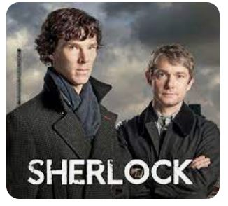
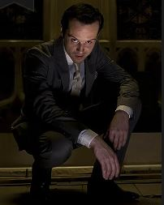

S01 E01 · A Study in Pink
War vet Dr. John Watson returns to London in need of a place to stay. He meets Sherlock Holmes, a consulting detective, and the two soon find themselves digging into a string of serial "suicides."
S01 E02 · The Blind Banker
Mysterious symbols and murders are showing up all over London, leading Sherlock and John to a secret Chinese crime syndicate called Black Lotus.
S01 E03 · The Great Game
Mycroft needs Sherlock's help, but a remorseless criminal mastermind puts Sherlock on a distracting crime-solving spree via a series of hostage human bombs through which he speaks

